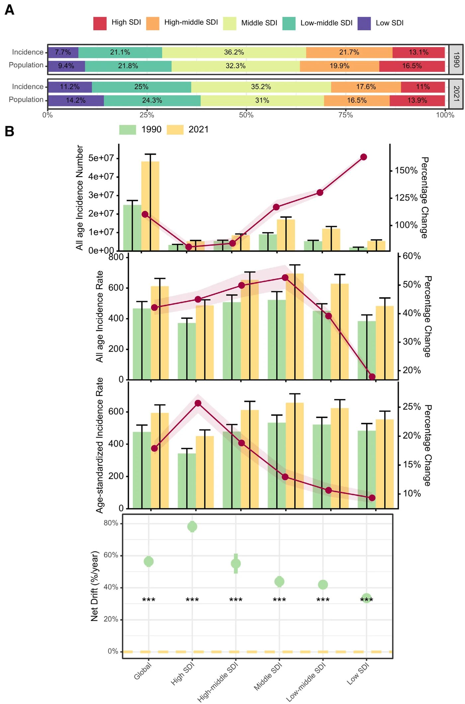
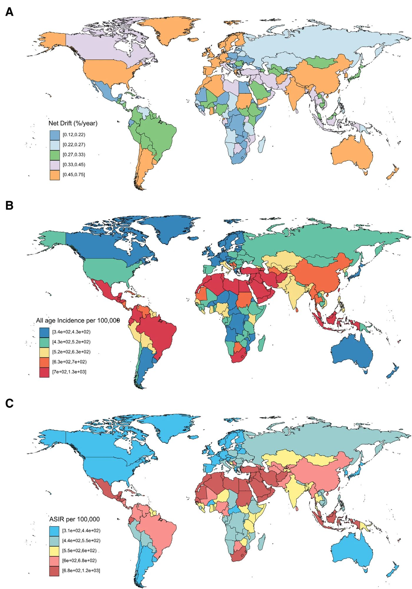
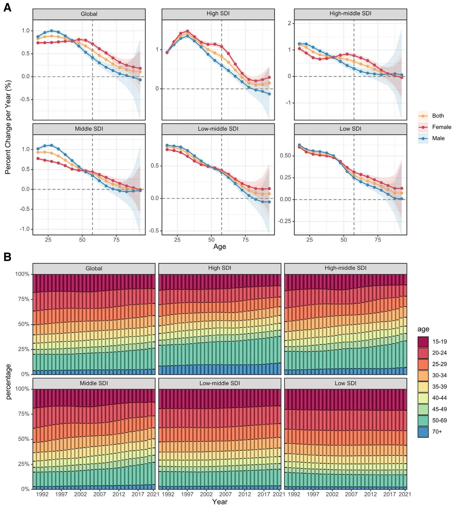
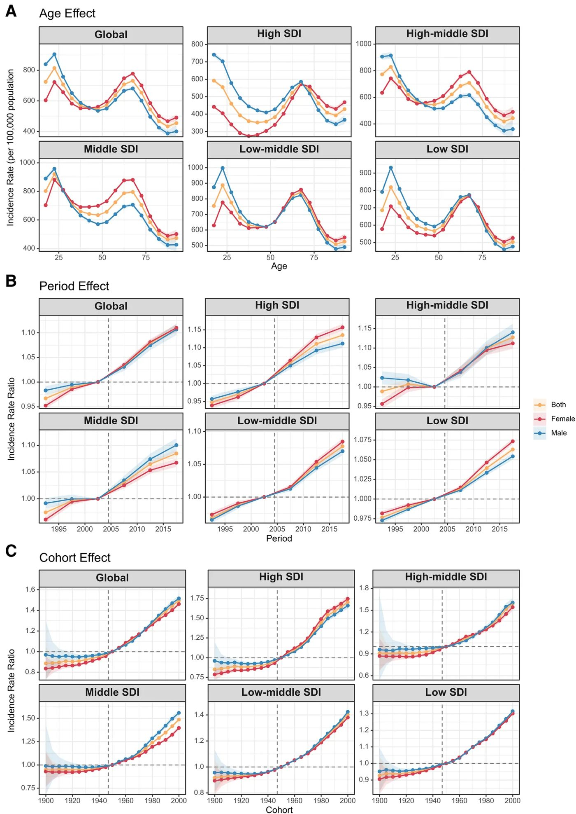

Жировая болезнь печени: почему число новых случаев удвоилось за три десятилетия


Полное описание рисунка
Глобальный рост показателей заболеваемости НАЖБП. (A) Изменения доли смертей, связанных с НАЖБП, в 5 регионах по ИСД по сравнению с долей населения каждого региона с 1990 по 2021 год. (B) Тренды показателей заболеваемости НАЖБП по квинтилям ИСД с 1990 по 2021 год. APC = возраст-период-когорта, НАЖБП = неалкогольная жировая болезнь печени, ИСД = социально-демографический индекс.
Глобальная заболеваемость неалкогольной жировой болезнью печени (НАЖБП) почти удвоилась с 1990 по 2021 год. Исследование, охватившее 204 страны, показывает, что основной рост связан с изменениями в образе жизни и метаболическими нарушениями. Наиболее высокие темпы прироста новых случаев наблюдаются в регионах со средним уровнем социально-экономического развития.
Главное
- Глобальная заболеваемость НАЖБП выросла с 24,9 млн до 48,4 млн случаев за 31 год.
- Наибольший ежегодный прирост новых случаев (0,886%) выявлен в возрастной группе 25–29 лет.
- В 2021 году ASIR составил 593,28 случая на 100 000 человек по всему миру.
Подробнее
Анализ данных Global Burden of Disease 2021 показал, что число новых случаев НАЖБП выросло с 24,9 млн в 1990 году до 48,4 млн в 2021 году. Стандартизированный по возрасту показатель заболеваемости (ASIR) в 2021 году составил 593,28 на 100 000 человек. Исследователи использовали модель «возраст-период-когорта» (APC), которая позволила отделить влияние демографических сдвигов от временных трендов. Чистый дрейф (net drift) заболеваемости составил 0,56% в год, что подтверждает устойчивый рост нагрузки на систему здравоохранения.
Наибольший ежегодный прирост заболеваемости (0,886%) зафиксирован в возрастной группе 25–29 лет. Интересно, что до 45 лет мужчины подвержены риску больше, однако после этого возраста картина меняется в пользу женщин. В странах с высоким уровнем дохода наиболее значительный рост (1,415% в год) наблюдается у людей в возрасте 30–34 лет. Эти данные подчеркивают, что НАЖБП перестает быть болезнью исключительно пожилых людей, активно затрагивая трудоспособное население.
Ограничения
Исследование основано на моделируемых оценках GBD 2021, что может не учитывать локальные различия в диагностических протоколах.
Полный перевод статьи
Резюме
Неалкогольная жировая болезнь печени (НАЖБП) стала одним из ведущих хронических заболеваний печени в мире, что во многом обусловлено ростом показателей ожирения, сахарного диабета 2-го типа и метаболического синдрома. По мере быстрого распространения этих заболеваний в последние десятилетия распространенность НАЖБП резко возросла, создавая серьезные проблемы для общественного здравоохранения. НАЖБП не только влияет на здоровье печени, но и несет риски прогрессирования до более тяжелых состояний, таких как неалкогольный стеатогепатит, цирроз и гепатоцеллюлярная карцинома. Хотя распространенность НАЖБП изучена широко, данные о заболеваемости остаются ограниченными. Исследования распространенности позволяют оценить бремя болезни, но не фиксируют скорость появления новых случаев. Данные о заболеваемости важны для понимания структуры заболевания, выявления новых тенденций и оценки эффективности мер общественного здравоохранения. Эти данные также отражают изменения в факторах риска на уровне популяции, таких как диета и физическая активность, которые связаны с НАЖБП. Недавние данные подчеркивают роль стратегий общественного здравоохранения в снижении прогрессирования и заболеваемости НАЖБП, включая санитарное просвещение, диетологическое консультирование и изменение образа жизни. Инициативы под руководством медсестер, направленные на обучение пациентов и изменение образа жизни, показали потенциал в снижении риска и замедлении прогрессирования. Эти усилия в сочетании с общественными программами здравоохранения могут значительно улучшить показатели здоровья населения за счет воздействия на основные факторы риска. Однако большая часть исследований заболеваемости НАЖБП носит региональный характер, что приводит к фрагментарности глобальных данных. Отсутствие комплексных долгосрочных данных о заболеваемости затрудняет понимание того, как экономические сдвиги и изменения образа жизни повлияли на заболеваемость НАЖБП. Данное исследование направлено на устранение этого пробела путем изучения тенденций заболеваемости НАЖБП с 1990 по 2021 год в 204 странах и территориях с применением модели «возраст-период-когорта» (APC). Модель APC эффективно разделяет влияние возраста, периода и когорты, предлагая ценную информацию о факторах, способствующих тенденциям заболеваемости. Этот анализ обеспечит комплексный взгляд на тенденции НАЖБП за последние 3 десятилетия, информируя глобальные стратегии общественного здравоохранения по борьбе с этим растущим бременем заболеваний.
Важно
Глобальная заболеваемость НАЖБП за 30 лет более чем удвоилась, что требует разработки стратегий общественного здравоохранения, основанных на данных о новых случаях, а не только на общей распространенности.
В этом исследовании использовались данные базы Global Burden of Disease (GBD) 2021, которая объединяет информацию из более чем 100 000 источников, включая академические публикации, реестры заболеваний, опросы домохозяйств и клинические данные, обеспечивая всестороннее представление о глобальной эпидемиологии. В частности, база данных GBD 2021 предоставляет смоделированные оценки заболеваемости НАЖБП по возрастным группам, полу и географическому положению с использованием стандартизированных процедур оценки. Оценки бремени НАЖБП были получены с использованием версии 2.1 метарегрессионного моделирования заболеваний и пространственно-временных моделей гауссовской регрессии, которые учитывают различия между возрастными группами, полом и географическими регионами через байесовскую структуру. Кроме того, социально-демографический индекс (SDI), комплексный показатель дохода, образования и коэффициентов рождаемости, использовался для стратификации регионов и оценки тенденций на разных уровнях социально-экономического развития.
Пояснение
Метарегрессия — статистический метод, позволяющий объединить данные из множества разрозненных источников для получения единой оценки, учитывая их неоднородность.
Временные тенденции заболеваемости НАЖБП оценивались с учетом как показателей заболеваемости для всех возрастов (AAIR), так и стандартизированных по возрасту показателей заболеваемости (ASIR) во всех возрастных группах, с особым акцентом на возрастные тенденции. Показатели заболеваемости были стандартизированы по возрасту на 100 000 человеко-лет на основе структуры мирового населения, используемой в GBD 2021. Кроме того, распределение заболеваемости было изучено по 9 возрастным категориям (например, 15–19, 20–24, 25–29, …, 50–69, 70+ лет) для определения доли случаев в каждой возрастной группе и наблюдения любых заметных вариаций.
Для оценки временного и поколенческого влияния на заболеваемость НАЖБП мы использовали модель APC. Этот статистический подход позволяет разделить эффекты возраста, периода и когорты, предлагая более глубокое понимание динамики, определяющей заболеваемость с течением времени. Модель APC позволяет идентифицировать «чистый дрейф» (net drift), представляющий общее ежегодное изменение показателей заболевания, и «локальный дрейф» (local drift), который отражает возрастные изменения заболеваемости. Анализируя относительные риски, модель количественно оценивает влияние временных и когортных факторов на заболеваемость НАЖБП, где значения >1 указывают на повышенный риск, а значения <1 — на сниженный риск. Чтобы смягчить проблему коллинеарности между переменными APC, использовался метод внутреннего оценщика (intrinsic estimator), который обеспечивает независимую оценку этих эффектов, несмотря на их линейную зависимость. Анализ APC включал данные о заболеваемости НАЖБП из GBD 2021, охватывающие 16 возрастных групп (от 15–19 до 90–94 лет) и 21 перекрывающуюся когорту рождения с 1896–1904 по 1996–2004 годы. Модель применялась через веб-инструмент, предоставленный Национальным институтом рака, с визуализацией, созданной с помощью статистического программного обеспечения R (версия 4.4.2; R Foundation for Statistical Computing). Статистическая значимость определялась с использованием двусторонних тестов с пороговым значением P = 0,05.
Осторожно
Модель APC основана на смоделированных данных GBD 2021; результаты отражают статистические оценки, а не прямые клинические наблюдения за каждым пациентом.
Данные о заболеваемости, представленные на Рис. 1 A, B и 2, в Таблице 1 и Таблице S1 (дополнительный цифровой контент 1), включают показатели численности населения, общее число случаев, AAIR, ASIR и чистый дрейф показателей заболеваемости за исследуемый период. В период с 1990 по 2021 год глобальная заболеваемость НАЖБП выросла с 24 856 159 случаев (95% доверительный интервал [ДИ]: 22 579 697,49–27 333 109,87) до 48 353 272 случаев (95% ДИ: 44 229 138,51–52 358 017,44). В 2021 году ASIR составил 593,28 на 100 000 человек (95% ДИ: 542,72–643,7). За этот период моделью APC был оценен чистый дрейф заболеваемости НАЖБП на уровне 0,56 (95% ДИ: 0,53–0,6).
Полное описание рисунка
Глобальный рост показателей заболеваемости НАЖБП. (A) Изменения доли смертей, связанных с НАЖБП, в 5 регионах по ИСД по сравнению с долей населения каждого региона с 1990 по 2021 год. (B) Тренды показателей заболеваемости НАЖБП по квинтилям ИСД с 1990 по 2021 год. APC = возраст-период-когорта, НАЖБП = неалкогольная жировая болезнь печени, ИСД = социально-демографический индекс.
На региональном уровне в районах со средним SDI в 2021 году наблюдался самый высокий AAIR для НАЖБП — 695 (95% ДИ: 635,18–752,12) на 100 000 человек, в то время как в регионах с низким SDI AAIR был ниже — 483 (95% ДИ: 434,72–535,87) на 100 000 человек. Кроме того, самый высокий ASIR был зафиксирован в регионах со средним SDI — 656,97/100 000 (95% ДИ: 602,08–712,86), тогда как самый низкий ASIR (450,03/100 000; 95% ДИ: 412,2–488,43) наблюдался в регионах с высоким SDI. Прогнозы чистого дрейфа по модели APC выявили контрастные тенденции в этих регионах. На национальном уровне Китай зафиксировал наибольшее число случаев заболеваемости НАЖБП в 2021 году — 9 572 435,36 (95% ДИ: 8 788 951,07–10 377 517,46), за ним следуют Индия (8 267 947,86; 95% ДИ: 7 485 362,61–9 068 568,69), Индонезия (2 080 647; 95% ДИ: 1 898 615,39–2 275 132,87), Бразилия (1 545 088,94; 95% ДИ: 1 422 183,53–1 665 108,04) и США (1 502 212,17; 95% ДИ: 1 374 518,06–1 626 330,09). В Катаре был самый высокий AAIR — 1309,14 (95% ДИ: 1163,31–1470,03) на 100 000 человек, в то время как в Дании был зарегистрирован самый низкий AAIR — 341,52 (95% ДИ: 312,86–369,42) на 100 000 человек. В 2021 году в Египте был самый высокий ASIR — 1188,57/100 000 населения (95% ДИ: 1107,18–1268,67), тогда как в Финляндии был самый низкий ASIR — 310,17 (95% ДИ: 284,58–338,28) на 100 000 человек. Значения чистого дрейфа варьировались: в Судане было самое высокое значение 0,75 (95% ДИ: 0,69–0,8), а в Грузии — самое низкое 0,12 (95% ДИ: 0,04–0,2) (Рис. 2, Таблица S1, дополнительный цифровой контент 1 и Рис. S1, дополнительный цифровой контент 2).


Полное описание рисунка
Чистый дрейф (A), AAIR (B) и ASIR (C) в 204 странах и территориях. (A) Карта мира, показывающая чистый дрейф показателей заболеваемости НАЖБП, отражающая тренды, связанные с календарными годами и последовательными когортами рождения. Глобальный чистый дрейф для показателя заболеваемости НАЖБП составил 0,564% (95% ДИ: 0,530–0,598). (B) Карта мира, отображающая AAIR для НАЖБП в 2021 году, с глобальным AAIR 612,74 (95% ДИ: 560,48–663,49) на 100 000 человек. (C) Карта мира ASIR для НАЖБП в 2021 году, с глобальным ASIR 593,28 (95% ДИ: 542,72–643,7) на 100 000 человек. AAIR = показатель заболеваемости для всех возрастов, ASIR = стандартизованный по возрасту показатель заболеваемости, ДИ = доверительный интервал, НАЖБП = неалкогольная жировая болезнь печени.
Важно
Глобальная заболеваемость НАЖБП выросла с 24,8 млн случаев в 1990 году до 48,3 млн в 2021 году, причем наиболее высокие показатели ASIR наблюдаются в странах со средним уровнем социально-демографического индекса (SDI).
Глобальный рост заболеваемости НАЖБП во всех возрастных группах с 1990 по 2021 год показан на Рис. 3 A. Самый высокий ежегодный рост на 0,886% (95% ДИ: 0,855%–0,917%) наблюдался в возрастной группе от 25 до 29 лет. После возрастной группы 45–49 лет рост заболеваемости постепенно замедляется, достигая наименьшего значения 0,107% (95% ДИ: от -0,394% до 0,612%) в группе 90–94 лет. Эта тенденция была характерна для регионов с высоким и средним SDI, где наиболее значительный рост произошел в возрастной группе 30–34 года в странах с высоким SDI, показав ежегодный рост на 1,415% (95% ДИ: 1,363%–1,467%). Возрастная группа 15–19 лет продемонстрировала наибольший рост в регионах с высоким-средним, низким-средним и низким SDI, за которым последовало постепенное снижение в последующих возрастных группах. До 45 лет у мужчин показатели заболеваемости были выше, чем у женщин; однако после 45 лет эта картина менялась на противоположную. В странах с высоким SDI мужчины испытывали меньший рост показателей заболеваемости по сравнению с женщинами, а в популяциях с низким-средним и низким SDI значимых гендерных различий не наблюдалось.


Полное описание рисунка
Локальные дрейфы показателей заболеваемости и возрастное распределение случаев НАЖБП по квинтилям ИСД с 1990 по 2021 год. (A) Локальные дрейфы показателей заболеваемости НАЖБП (оцененные по моделям возраст-период-когорта) по 16 возрастным группам (15–19, 20–24, 25–29, …, 90–94 года) с 1990 по 2021 год. Точки и заштрихованные области представляют ежегодное процентное изменение показателя заболеваемости (%/год) с соответствующим 95% доверительным интервалом (ДИ). (B) Изменения во времени относительного распределения случаев НАЖБП по различным возрастным группам (15–19, 20–24, 25–29, 30–34, 35–39, 40–44, 45–49, 50–69, 70+ лет) с 1990 по 2021 год. ASIR = стандартизованный по возрасту показатель заболеваемости, ДИ = доверительный интервал, НАЖБП = неалкогольная жировая болезнь печени, ИСД = социально-демографический индекс.
На Рис. 3 B показаны изменения в возрастном распределении случаев НАЖБП с течением времени. В 1990 году на долю лиц моложе 30 лет приходилась половина глобальных случаев НАЖБП, причем самая высокая доля приходилась на возрастную группу 20–24 года. К 2021 году произошло заметное увеличение заболеваемости НАЖБП в возрастной группе 50–69 лет, которая стала наиболее распространенной группой в мире. Эта закономерность последовательно наблюдалась в регионах с высоким, высоким-средним и средним SDI, где наиболее значительный рост произошел в группе 50–69 лет. Напротив, в регионах с низким и низким-средним SDI возрастные тенденции изменились незначительно. Рис. S2 (дополнительный цифровой контент 3) предлагает всесторонний обзор возрастных паттернов заболеваемости НАЖБП в разных странах.
Анализ эффектов APC на заболеваемость НАЖБП, сгруппированный по квинтилям SDI, представлен на Рис. 4. Возрастные тенденции были в значительной степени схожими во всех квинтилях SDI, за исключением регионов с высоким SDI. В глобальных популяциях показатели заболеваемости НАЖБП демонстрировали 2 пика возрастного распределения. Первый пик пришелся на возрастную группу 20–24 года в мире, в то время как в регионах с высоким SDI он сместился на группу 15–19 лет, которая имела самый высокий показатель заболеваемости в целом. Второй пик наблюдался в возрастной группе 65–69 лет, за которым следовало снижение с увеличением возраста и небольшой рост в группе 90–94 года (Рис. 4 A). Гендерные различия также были очевидны во всем мире: у мужчин моложе 50 лет показатели заболеваемости были значительно выше, чем у женщин, в то время как после 50 лет тенденция менялась, и женщины демонстрировали более высокие показатели, особенно в различных регионах SDI.


Полное описание рисунка
Влияние возраста, периода и когорты на заболеваемость НАЖБП по квинтилям ИСД. (A) Возрастные эффекты, представленные аппроксимированными продольными возрастными кривыми заболеваемости (на 100 000 человеко-лет), скорректированными на вариации периода. (B) Эффекты периода, обозначенные относительным риском заболеваемости (отношение показателей заболеваемости), рассчитанным как отношение возрастных показателей за период с 1990 по 1994 год (с 2000–2004 годами в качестве референтного периода) к периоду с 2015 по 2019 год. (C) Эффекты когорты, представленные относительным риском заболеваемости, рассчитанным как отношение возрастных показателей между когортами 1900 и 2000 годов, с когортой 1950 года в качестве референтной. Точки и заштрихованные области указывают показатели заболеваемости или отношения показателей вместе с соответствующими 95% доверительными интервалами (ДИ). ДИ = доверительный интервал, НАЖБП = неалкогольная жировая болезнь печени, ИСД = социально-демографический индекс.
Периодический эффект в глобальном масштабе указывал на постоянное увеличение риска НАЖБП с течением времени (Рис. 4 B), что является закономерностью, характерной для всех регионов. Минимальные гендерные различия наблюдались в периодических эффектах, за исключением регионов с высоким-средним и средним SDI, где у мужчин показатели заболеваемости были выше, чем у женщин, особенно до 2003 года, что подчеркивает региональные различия. В глобальном масштабе когортный эффект показал устойчивое увеличение риска НАЖБП среди более молодых когорт рождения, причем самый высокий риск наблюдался в когорте 2000 года. Схожие тенденции наблюдались в регионах с высоким, высоким-средним, низким-средним и низким SDI. В регионе со средним SDI когорты, родившиеся до 1950 года, демонстрировали относительно стабильные риски, но заметное увеличение риска наблюдалось у тех, кто родился после 1950 года, что согласуется с более молодыми возрастными группами (Рис. 4 C). Для когорт, родившихся до 1950 года, у мужчин риски заболеваемости были значительно выше, чем у женщин, но это гендерное различие уменьшалось в более поздних когортах, за исключением регионов со средним SDI, где у мужчин сохранялись более высокие риски. Рис. S3, S4 и S5 (дополнительный цифровой контент 4) содержат дополнительные сведения об эффектах APC на заболеваемость НАЖБП в разных странах.
НАЖБП стала серьезной проблемой общественного здравоохранения во всем мире, прежде всего из-за связи с метаболическими нарушениями, такими как ожирение и сахарный диабет 2-го типа. В отличие от многих других заболеваний печени, НАЖБП не связана напрямую с потреблением алкоголя, что делает ее лечение и профилактику сильно зависимыми от изменения образа жизни и мер общественного здравоохранения. Потенциал заболевания к прогрессированию до более тяжелых форм, таких как неалкогольный стеатогепатит и цирроз, подчеркивает необходимость раннего выявления и вмешательства. Хотя исследования распространенности дают моментальный снимок бремени болезни в определенный момент времени, данные о заболеваемости дают представление о скорости появления новых случаев. Это имеет решающее значение для понимания динамики заболевания, выявления новых тенденций и оценки эффективности профилактических мер. Отсутствие комплексных данных о заболеваемости НАЖБП препятствует глубокому пониманию ее эпидемиологии и разработке целенаправленных стратегий общественного здравоохранения. С 1990 по 2021 год глобальная заболеваемость НАЖБП увеличилась более чем вдвое — с примерно 24,9 млн случаев (95% ДИ: 22,6–27,3 млн) до 48,4 млн случаев (95% ДИ: 44,2–52,4 млн), как сообщается в нашем исследовании с использованием данных базы GBD 2021. ASIR также увеличился, составив 593,28/100 000 человек (95% ДИ: 542,72–643,7) в 2021 году, что указывает на растущий риск даже с учетом старения населения. Регионы со средним SDI, такие как части Азии и Латинской Америки, несут наибольшее бремя болезни, при этом как AAIR, так и ASIR выше по сравнению с регионами с высоким SDI, такими как Северная Америка и Европа. Например, согласно нашим результатам, в Китае было зафиксировано наибольшее число случаев заболеваемости НАЖБП в 2021 году — 9,6 млн (95% ДИ: 8,8–10,4 млн), за ним следует Индия с 8,3 млн (95% ДИ: 7,5–9,1 млн). На национальном уровне в Катаре был самый высокий AAIR — 1309,14/100 000 (95% ДИ: 1163,31–1470,03), в то время как в Египте был самый высокий ASIR — 1188,57/100 000 (95% ДИ: 1107,18–1268,67), что подчеркивает региональные различия.
Возрастные тенденции показывают, что самый высокий рост заболеваемости НАЖБП в мире произошел в возрастной группе 25–29 лет, с ежегодным увеличением на 0,886% (95% ДИ: 0,855%–0,917%). С течением времени произошло заметное смещение возрастного распределения: к 2021 году группа 50–69 лет стала наиболее распространенной, по сравнению с более молодыми группами, такими как 20–24 года в 1990 году. Несколько факторов могут способствовать наблюдаемым тенденциям заболеваемости НАЖБП. Среди них важным фактором является глобальный рост ожирения и других метаболических нарушений. Ожирение является хорошо известным фактором риска НАЖБП, и метаанализ 21 когортного исследования, включавшего 381 655 участников, показал, что ожирение связано с 3,53-кратным повышением риска развития НАЖБП, при этом риск увеличивается дозозависимо по мере роста ИМТ. В соответствии с этой связью, глобальный систематический обзор и метаанализ сообщили о высокой распространенности НАЖБП среди лиц с избыточным весом и ожирением, с объединенными оценками 69,99% и 75,27% соответственно. Однако связь между ожирением и НАЖБП вряд ли будет одинаковой во всех странах и подгруппах населения. Глобальные анализы продемонстрировали существенный рост избыточного веса и ожирения за последние десятилетия, сопровождающийся значительной неоднородностью между странами и группами населения. Такие различия в масштабах и сроках эпидемии ожирения могут частично способствовать географической и временной неоднородности заболеваемости НАЖБП, наблюдаемой в нашем исследовании. В частности, быстрая урбанизация, переход к другому питанию и изменения в физической активности во многих странах со средним уровнем дохода могли увеличить воздействие ожиряющей среды, потенциально способствуя относительно высокой заболеваемости НАЖБП, наблюдаемой в регионах со средним SDI. Социально-экономические обстоятельства могут дополнительно влиять на воздействие факторов риска, связанных с ожирением, на уровне популяции, поскольку более низкий социально-экономический статус района был связан с более высокими шансами избыточного веса и ожирения в систематическом обзоре и метаанализе более 1,2 млн человек. Тем не менее, эти отношения сложны и также могут зависеть от различий в доступе к медицинской помощи, диагностических возможностях, моделях питания и других метаболических факторах риска в разных условиях.
Возрастные паттерны могут дать дополнительное представление о наблюдаемых тенденциях. В нашем анализе APC самый большой ежегодный рост заболеваемости НАЖБП наблюдался среди лиц в возрасте 25–29 лет, в то время как доля новых случаев сместилась в сторону старших возрастных групп, причем на группу 50–69 лет в 2021 году приходилась большая доля, чем в 1990 году. Данные крупного проспективного когортного исследования дополнительно предполагают, что увеличение веса в раннем взрослом возрасте связано с существенно повышенным последующим риском НАЖБП, что подтверждает потенциальную значимость кумулятивного воздействия ожирения на протяжении всей жизни. Таким образом, возрастающий риск, наблюдаемый среди более молодых когорт рождения в нашем исследовании, может частично отражать воздействие все более ожиряющей среды на последовательные поколения. Однако ожирение не следует считать достаточным объяснением наблюдаемых закономерностей, поскольку НАЖБП также встречается у лиц, не страдающих ожирением, и может зависеть от метаболической дисфункции, диетических факторов, физической инертности, генетической предрасположенности и других факторов окружающей среды. Поэтому наблюдаемые географические, возрастные и когортные закономерности, вероятно, отражают совокупное влияние ожирения и других взаимодействующих метаболических и экологических факторов, а не только ожирения. Основываясь на модели APC, положительный чистый дрейф 0,56%/год (95% ДИ: 0,53%–0,60%) указывает на общее увеличение заболеваемости НАЖБП за исследуемый период. Когортный эффект также показал более высокие относительные риски среди более молодых когорт рождения, особенно тех, кто родился после 1950 года. Эти результаты подчеркивают важность постоянного наблюдения за заболеваемостью НАЖБП и ее метаболическими факторами риска по мере старения этих когорт. Для решения растущего бремени НАЖБП необходим многогранный подход. Кампании по повышению осведомленности общественности, пропагандирующие здоровый образ жизни, включая сбалансированное питание и регулярную физическую активность, имеют важное значение. Например, было показано, что средиземноморская диета, известная низким содержанием насыщенных жиров, снижает риск НАЖБП. Внедрение соответствующих стратегий оценки рисков и раннего выявления в группах высокого риска, особенно у лиц с ожирением или диабетом, может способствовать более ранней идентификации и лечению НАЖБП. Индивидуальные программы по борьбе с ожирением, диабетом и другими метаболическими факторами риска имеют решающее значение, при этом данные показывают, что потеря веса может улучшить или обратить вспять признаки НАЖБП, подчеркивая важность изменения образа жизни. Регуляторные меры по созданию более здоровой пищевой среды и поощрению физической активности, такие как средиземноморская диета с низким гликемическим индексом в сочетании с аэробными упражнениями, могут снизить заболеваемость НАЖБП. Постоянный мониторинг заболеваемости НАЖБП и ее факторов риска важен для оценки эффективности вмешательств и выявления новых тенденций. Хотя наше исследование дает ценную информацию, следует признать несколько ограничений. Во-первых, различия в доступности данных, выявлении случаев и диагностической практике в разных странах могут повлиять на сопоставимость оценок GBD, а недостаточная диагностика может быть более существенной в регионах с низким SDI из-за ограниченного доступа к медицинской помощи и диагностических возможностей. Во-вторых, хотя ожирение и другие метаболические факторы риска являются важными участниками НАЖБП, настоящий анализ не включал распространенность ожирения или другие метаболические воздействия в качестве изменяющихся во времени объясняющих переменных. Поэтому их независимый вклад в наблюдаемые временные, возрастные и когортные закономерности не мог быть напрямую количественно оценен. Соответственно, обсуждаемые здесь отношения следует интерпретировать как контекстуальные объяснения, а не как причинно-следственные связи. Будущие лонгитюдные исследования, объединяющие гармонизированные данные об ожирении, метаболических факторах риска, характеристиках образа жизни и заболеваемости НАЖБП в разных странах, могут помочь прояснить механизмы, лежащие в основе наблюдаемой неоднородности тенденций заболеваемости НАЖБП.
Осторожно
Наблюдаемые связи между ожирением и НАЖБП носят корреляционный характер; исследование не учитывало все метаболические факторы, поэтому выводы о причинах являются контекстуальными.
В заключение, это исследование подчеркивает растущее глобальное бремя НАЖБП, особенно в странах со средним уровнем дохода, и определяет ключевые возрастные, периодические и когортные эффекты, которые способствовали этой тенденции. Результаты подчеркивают важность реализации целенаправленных стратегий общественного здравоохранения для борьбы с модифицируемыми факторами риска, связанными с НАЖБП, и снижения ее заболеваемости. Будущие исследования должны дополнительно изучить первопричины НАЖБП и оценить успех профилактических и терапевтических подходов в снижении воздействия этой растущей проблемы общественного здравоохранения.
Схема исследования
Статья опубликована в рецензируемом журнале Medicine. Но и опубликованный результат — одно исследование, а не окончательный вывод.
Источник
| Источник | Категория | Лицензия |
|---|---|---|
| Medicine (Europe PMC) | micronutrients | CC BY 4.0 |
Источники
| Источник | Ссылка |
|---|---|
| Страница статьи | europepmc.org |
| Полный текст (PDF) | europepmc.org |
| DOI | doi.org |
| Метаданные Crossref | api.crossref.org |
| Europe PMC | europepmc.org |
| Иллюстрация | commons.wikimedia.org |